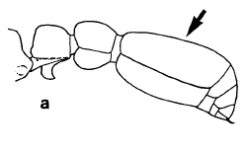

Cerapachys & Leptogenys Genera
Mandibles thin & long sword-like with only few teeth at the reduced extremity
Bases of the mandibules wide, on the prolongation of the lateral border of the cranium
Japan

JAD
PE relatively wide, anterodorsal corners angulate
Whole body black: C. daikoku
Japan
PE nearly as long as wide, anterodorsal corners rounded
PN not margined anteriorly by a carina ind-lview: C. humicola

JAD
Body pale to dark brown
Japan
PN margined anteriorly by a weak carina in d-lview

JAD
If (a) t2 longer than PE + t1 together: C. biroi, else C. hashimotoi